How I Led 3,000 Employee Advocacy and Cross-Channel Design at Cohesity
Employee Advocacy and Integrated Creative for an AI-Powered Data Security Leader
Cohesity is the leader in AI-powered data security and management, trusted by 70% of the Global 500 across 140+ countries. While the company protects the world's most critical data, its brand and content needed to feel as human as the people behind it. This case study explores how I helped power Cohesity's Champions employee advocacy program and design cohesive creative across PR, blogs, newsletters, and global events.
THE PROBLEM
Enterprise cybersecurity content has a reputation. It's dense, technical, and written for boardrooms instead of the people who actually share it, read it, and live with the threats it covers. Cohesity had powerful product news, deep customer stories, and real industry credibility, but the social voice and visual presence often felt indistinguishable from the rest of the enterprise software space. Employees weren't sharing content they didn't connect with, and the brand was missing chances to land with both internal advocates and external audiences in a way that felt human, modern, and worth talking about.
THE SOLUTION
I rebuilt how Cohesity showed up. I authored a new brand voice for the Champions employee advocacy program, closer to Duolingo and Figma social than corporate LinkedIn, and operationalized a daily content engine that fed 3,000+ active Champions with posts they actually wanted to share. Alongside the advocacy work, I led original creative design across PR campaigns, blog hero graphics, newsletter design, and global event activations. The result was a Cohesity presence that felt sharper, faster, and more share-worthy across every customer-facing channel.
Reframing Cohesity's Voice for an Employee Advocacy Program That Actually Got Shared
I rebuilt Cohesity's Employee Advocacy program from the ground up, authoring a new brand voice closer to Duolingo and Figma social than corporate LinkedIn and running a daily content engine for 3,000+ advocates globally. Beyond core post writing, I led the redesign of the program, internal competitions, expanded program reach into international markets, connected advocacy work across multiple departments, and headed an executive advocacy program where I personally wrote and edited posts for the Chief Product and Chief Financial Officers. The result was a sharper, faster Cohesity voice that turned employee voices into one of the company's strongest social channels.
Click Visual to Learn More
Pushing Brand Voice and Visuals Through Creative Holiday Content
Beyond employee advocacy, I supported the creative team across Cohesity's most visible moments, including partnership campaigns with Google Cloud, AWS, NVIDIA, Hewlett-Packard, and Microsoft, blog hero graphics for executive thought leadership, weekly Security Spotlight and Empire Strikes Backups newsletter creative, and event activations. The visual language had to feel modern enough to compete with consumer-grade design while still landing credibility in enterprise cybersecurity.
Click Visual to Learn More